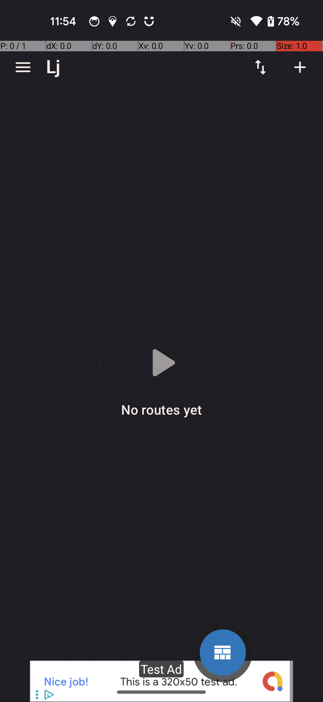
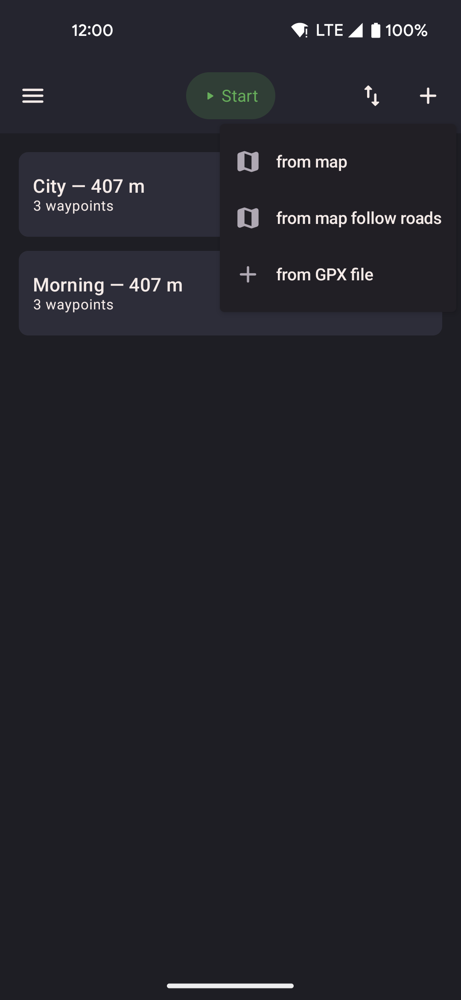
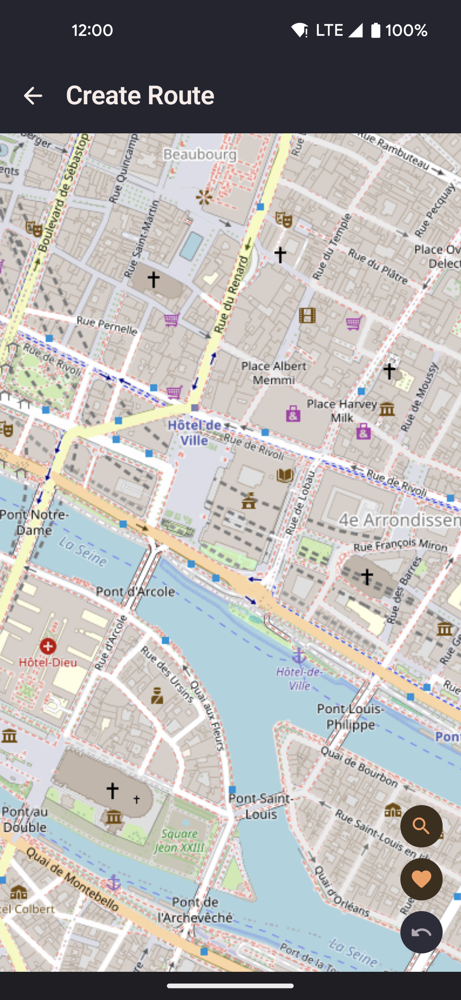
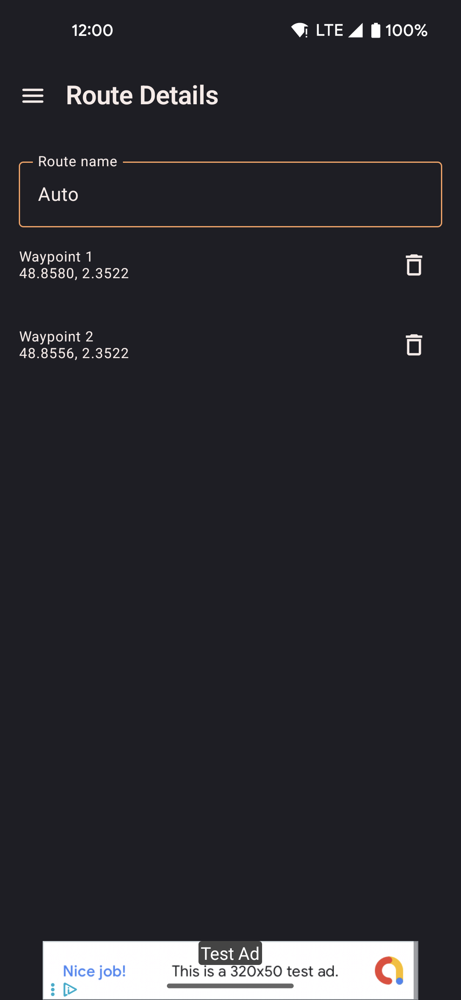

Routes
Place a series of stops on the map and play them back at whatever speed you choose. Routes can follow straight lines between stops, or snap to real roads. All of your route data stays on your device. There's no cloud sync and no account needed.

- Tap the add button to create a new route by placing stops on the map or importing a file.
- Tap a saved route to start it. You can loop it, reverse it, or have it return to the start.
- Import routes from GPX files, GPS Joystick, or YAMLA through the overflow menu.
How to add a route
Tap the plus button in the top-right corner of the Routes screen to start a new route.

- The button in the top-right corner opens the add menu.
- Choose "From map" to place stops by hand, or "From file" to import an existing route.
Route types
| Type | How it works |
|---|---|
| Straight | You move between stops in straight lines at your current speed. No internet connection is needed. This is the default for imported routes. |
| Guided (road-following) | Each stretch between stops is sent to an online road routing service at router.project-osrm.org, which sends back a path that follows real roads. The Walk and Run speeds use walking directions; the Bike speed uses cycling directions. If the service can't be reached, that stretch falls back to a straight line. The road path is saved after it's fetched once, so later replays don't need to look it up again. |
Replay options
| Option | Description |
|---|---|
| Loop | Once you reach the last stop, playback starts over from the first. It keeps going until you stop it yourself. |
| Reverse | Plays the stops in reverse order, from last to first. You can combine this with loop. |
| Return to start | After the last stop, you walk back to the first one before stopping. This avoids a sudden jump in position when the route ends. |
| Pause / Resume | Pauses movement while holding your current position in place. Available from the widget and the routes screen while a route is running. |
Route creator
Place stops by tapping the map. The route draws itself as a line as you add each point.

- Search for a location by name using the search button, backed by nominatim.openstreetmap.org.
- Undo the last stop you placed with the undo button.
- Choose between a straight line and road-following before saving.
- Record mode: tap record to capture your phone's real movement as a new route as you walk.
Route detail
Edit an existing route: rename it, reorder or remove individual stops, or change how it moves between them.

- Drag stops in the list to reorder them.
- Tap a stop to highlight it on the map preview.
- Switching a route from straight to road-following looks up the road path again the next time you start it.
- Delete the route for good from the action bar.
Hot routes
In Settings, under Routes, turning on Show hot routes adds a curated set of ready-made routes for popular event locations around the world: large walking areas, parks, and landmarks that come in handy for spoofing your location. This is off by default.
- Turning it off removes only the routes this feature added. Your own routes are never touched.
- The setting sticks across app restarts and is included when you export or import your data.
Import formats
| Format | Notes |
|---|---|
| GPX | A common file format for GPS tracks and routes. Both recorded tracks and planned routes are supported, and both come in as straight-line routes. Any elevation data in the file is ignored, since locationjoystick handles altitude separately through the GPS realism settings. |
| GPS Joystick | The export file from the GPS Joystick app. Routes and favorites both come across, and speeds are matched to the closest available speed where possible. |
| YAMLA | The export file from the YAMLA app. Favorites and speed settings come across; routes are imported as straight-line segments. |
| locationjoystick backup | The app's own backup format. Keeps everything, including route type, stops, and other details. Choose Add to merge it with what you already have, or Replace to overwrite it. |